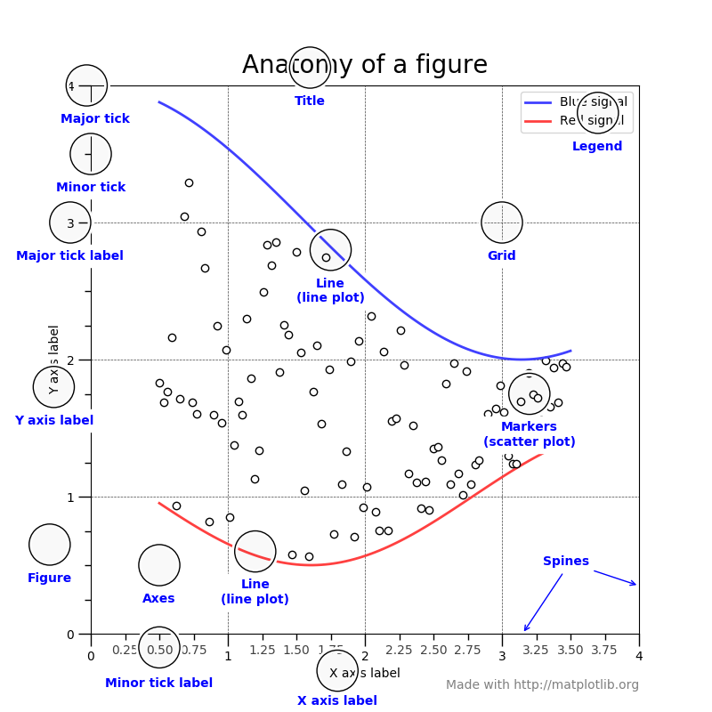
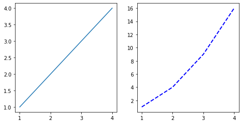

Matplotlib
Matplotlib#
 Anatomy of a Figure, https://matplotlib.org/3.1.1/gallery/showcase/anatomy.htmlimport matplotlib.pyplot as plt
A list of numbers into a graphic
x = [1, 2, 3, 4]
y = [10, 11, 12, 13]
plt.plot(x,y)
[<matplotlib.lines.Line2D at 0x11225be80>]
plt.plot(x,y,'ro')
[<matplotlib.lines.Line2D at 0x11237da80>]

plt.bar(x,y)
<BarContainer object of 4 artists>
plt.scatter(x,y,color='r')
<matplotlib.collections.PathCollection at 0x112461ea0>
Just so you see it, there are two main ways to create plots in matplotlib
Use matplotlib.pyplot (which here is aliased as plt) – this is the higher-level and easier to use module
Use figure and axes objects (objects in the object-oriented programming sense) to manipulate the graphical object you see
# the object way
fig = plt.figure()
ax = fig.add_subplot(111)
ax.plot(x,y)
[<matplotlib.lines.Line2D at 0x1124d19f0>]
fig = plt.figure(figsize=(8,8))
ax = fig.add_subplot(1, 1, 1)
ax.plot(x,y)
[<matplotlib.lines.Line2D at 0x112541a20>]
fig,ax = plt.subplots(1,2,figsize=(8,4))
x = [1,2,3,4]
y1 = [1,2,3,4]
y2 = [1,4,9,16]
ax[0].plot(x,y1)
ax[1].plot(x,y2,color='blue', linestyle='--', linewidth=2)
plt.show()

Let’s stick with plt for the moment (and later we’ll migrate to pandas)
x = np.linspace(0,2*np.pi,100)
y = np.cos(x)
plt.plot(x,y)
---------------------------------------------------------------------------
NameError Traceback (most recent call last)
Input In [10], in <cell line: 1>()
----> 1 x = np.linspace(0,2*np.pi,100)
2 y = np.cos(x)
3 plt.plot(x,y)
NameError: name 'np' is not defined
x = np.linspace(0,2*np.pi,100)
y = np.cos(x)
plt.figure(figsize=(8,5))
plt.plot(x,y)
x = np.linspace(0,2*np.pi,100)
y = np.cos(x)
plt.figure(figsize=(8,5))
plt.plot(x,y)
plt.xlim([0,2*np.pi])
plt.xlabel('position')
plt.ylabel('amplitude')
plt.show()
# figure call first
plt.figure(figsize=(8,5))
# specification for scatter plot
x2 = np.linspace(0,2*np.pi,10)
y2 = np.cos(x2)
plt.scatter(x2,y2,color='black')
# specification for line plot -- more points so it looks smooth
x1 = np.linspace(0,2*np.pi,100)
y1 = np.cos(x)
plt.plot(x,y)
# specification for axes, labels, etc.
plt.xlim([0,2*np.pi])
plt.xlabel('position')
plt.ylabel('amplitude')
plt.show()